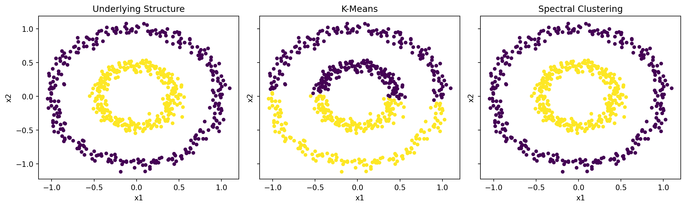
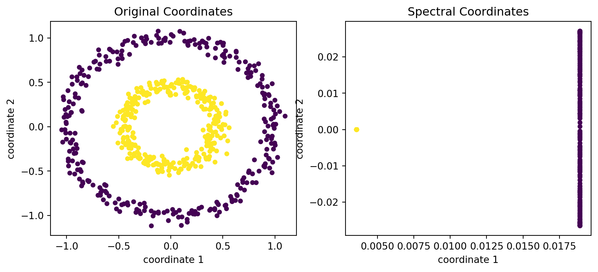

PCA represents data with a linear subspace. This is effective when the important geometry is approximately linear, but it may miss curved or connectivity-based structure.
Graph and manifold methods begin from a different idea: nearby observations should remain nearby after embedding. A common workflow is
This chapter studies spectral methods, self-organizing maps, and UMAP. These methods have different algorithms, but all replace the original coordinates with a representation designed to preserve selected neighborhood structure.
14.1 From Data to a Graph
Treat each observation as a vertex. An edge between observations \(i\) and \(j\) records that they are similar. The weighted adjacency matrix is
The graph determines the geometry that the method sees. A small neighborhood emphasizes local structure; a large neighborhood moves toward global Euclidean structure.
CautionPreprocessing still matters
Neighborhoods are computed from a distance or similarity. Scaling, irrelevant features, missing-value handling, and the metric can change the graph before the embedding algorithm begins.
14.2 Spectral Clustering
K-means partitions observations by proximity to centers. Spectral clustering instead partitions a graph by connectivity. It is useful for non-convex groups such as rings, curves, and linked regions.
This identity explains the method. If two vertices have a large edge weight, the quadratic form penalizes assigning them very different values. Smooth eigenvectors of \(L\) therefore provide coordinates that respect graph connectivity.
A common normalized Laplacian is
\[
L_{\mathrm{sym}}
=
I-D^{-1/2}WD^{-1/2}.
\]
Normalization reduces the influence of vertices that have unusually large degrees.
14.2.2 Spectral Clustering Algorithm
For \(K\) clusters:
construct an adjacency matrix \(W\);
compute a graph Laplacian;
take eigenvectors associated with the \(K\) smallest eigenvalues;
use their rows as an embedded representation of the observations;
apply K-means to the embedded rows.
The final step is ordinary K-means, but it operates in graph-derived coordinates rather than the original feature space.
D:\Codes\Notes\su26_pdf\.venv\Lib\site-packages\sklearn\manifold\_spectral_embedding.py:324: UserWarning: Graph is not fully connected, spectral embedding may not work as expected.
warnings.warn(

The Euclidean centers do not separate the rings, but the nearest-neighbor graph records that points are connected around each ring.
NoteWhat must be tuned
Spectral clustering depends on the number of clusters and the graph construction. Important choices include n_neighbors, the affinity kernel, its bandwidth, and whether the Laplacian is normalized.
14.2.4 Inspecting the Spectral Embedding
The embedding itself can be computed without immediately assigning clusters.
D:\Codes\Notes\su26_pdf\.venv\Lib\site-packages\sklearn\manifold\_spectral_embedding.py:324: UserWarning: Graph is not fully connected, spectral embedding may not work as expected.
warnings.warn(

Spectral coordinates need not preserve ordinary distances or orientation. They are constructed to expose graph connectivity.
14.3 Self-Organizing Maps
A self-organizing map (SOM) represents observations with prototypes arranged on a low-dimensional grid. Each grid location \(r\) has a prototype vector \(m_r\in\mathbb R^p\).
For an observation \(x\), the best matching unit is
\[
c(x)=\argmin_r\norm{x-m_r}.
\]
During training, the winning prototype and its grid neighbors move toward the observation:
where \(\alpha_t\) is a learning rate and \(h_{c,r}(t)\) decreases with grid distance from the winning unit.
The neighborhood width is usually large early in training and shrinks over time. Early updates organize the global map; later updates refine local prototypes.
14.3.1 What a SOM Produces
A fitted SOM gives:
a grid of prototype vectors;
the best matching grid cell for each observation;
a two-dimensional summary in which nearby cells tend to represent similar observations.
It combines aspects of vector quantization and topology-preserving visualization. Unlike PCA or UMAP, the output locations are restricted to a regular grid.
Python does not include SOM in core sklearn. One lightweight implementation is MiniSom.
uv add minisom
from minisom import MiniSomfrom sklearn.datasets import load_winefrom sklearn.preprocessing import StandardScalerrng = np.random.default_rng(1)wine = load_wine()X_wine = StandardScaler().fit_transform(wine.data)y_wine = wine.targetsom = MiniSom( x=10, y=10, input_len=X_wine.shape[1], sigma=1.5, learning_rate=0.5, random_seed=1,)som.random_weights_init(X_wine)som.train_random(X_wine, num_iteration=3000)winner = np.array([som.winner(x) for x in X_wine])plt.scatter( winner[:, 0] + rng.uniform(-0.2, 0.2, len(winner)), winner[:, 1] + rng.uniform(-0.2, 0.2, len(winner)), c=y_wine, edgecolor="black",)plt.xlabel("SOM grid x")plt.ylabel("SOM grid y")plt.title("Wine Data on a Self-Organizing Map");
Jitter is added only to show observations assigned to the same grid cell.
CautionSOM output is exploratory
The map depends on grid dimensions, initialization, learning rate, neighborhood width, and training length. Grid adjacency is meaningful, but the precise Euclidean distance between two grid cells should not be treated as an exact original-space distance.
14.4 UMAP
Uniform Manifold Approximation and Projection (UMAP) is a nonlinear dimension-reduction method designed to preserve local neighborhood structure.
At a high level, UMAP:
finds nearest neighbors in the original space;
converts local distances into weighted graph connections;
constructs a corresponding graph in the low-dimensional space;
optimizes the low-dimensional coordinates so the two graphs agree.
The method adapts connection strengths to local density rather than using one global distance bandwidth for all observations.
14.4.1 UMAP in Python
The standard Python implementation is provided by umap-learn.
Structures that persist across preprocessing choices, random seeds, and reasonable tuning settings are more credible than features visible in one plot only.
14.5 What an Embedding Plot Does Not Show
Low-dimensional embeddings are useful but easy to overinterpret.
CautionApparent clusters are not proof of clusters
UMAP and spectral embeddings distort some distances to preserve selected graph relationships. A visible gap may be affected by graph construction, optimization, initialization, or tuning. If clustering is the goal, fit and evaluate a clustering procedure rather than treating separated colors or islands as self-validating evidence.
In particular:
axis directions usually have no direct feature interpretation;
distances between far-apart groups may be unreliable;
group sizes and densities in the plot need not match original-space densities;
different runs may rotate, reflect, or rearrange the embedding;
an embedding fitted to all observations can leak test-set information in a predictive workflow.
For supervised modeling, fit preprocessing and embedding steps using the training data only whenever the method supports transforming new observations.
14.6 Comparing the Methods
Method
Representation
Main strength
Main limitation
PCA
linear scores
interpretable loadings and optimal low-rank reconstruction
only linear structure
Spectral embedding
Laplacian eigenvectors
exposes graph connectivity and non-convex groups
graph construction and eigen-decomposition can be costly
SOM
prototypes on a regular grid
discrete topology-preserving exploratory map
training and grid choices affect the result
UMAP
optimized neighborhood graph
flexible nonlinear visualization and transform support
tuning-sensitive; global geometry is not guaranteed
PCA is usually the first method to try because it is fast, deterministic up to signs, and interpretable. Graph methods are appropriate when local connectivity is central or linear projections fail to reveal useful structure.
14.7 Practical Workflow
Choose and preprocess features based on the scientific question.
Start with PCA as a transparent baseline.
Build graph embeddings only after deciding what distance and neighborhood should mean.
repeat the analysis across plausible tuning choices and random seeds;
evaluate clusters in the original feature space and check stability;
treat the embedding as a representation, not as ground truth.
14.8 Summary
Spectral methods use Laplacian eigenvectors to turn graph connectivity into features, after which ordinary clustering can be applied. SOM organizes prototype vectors on a grid. UMAP optimizes a low-dimensional graph to preserve local neighborhoods. All three methods can reveal nonlinear structure, but their output inherits every choice made while constructing the neighborhood geometry.